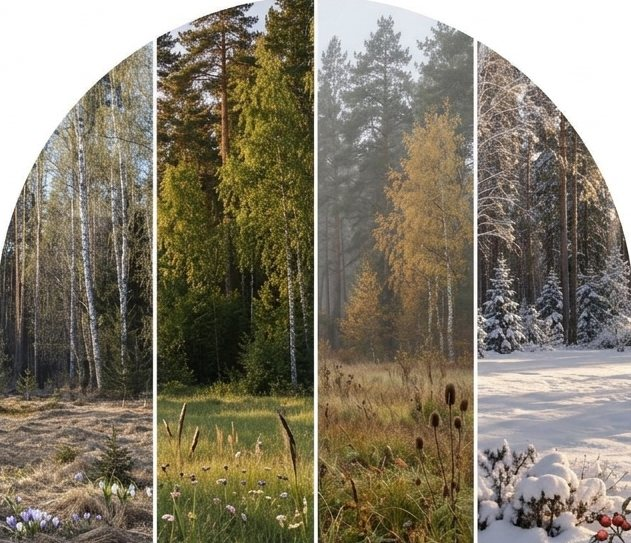
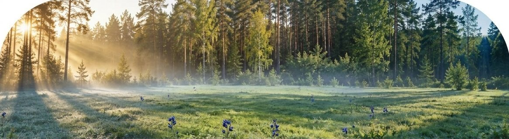
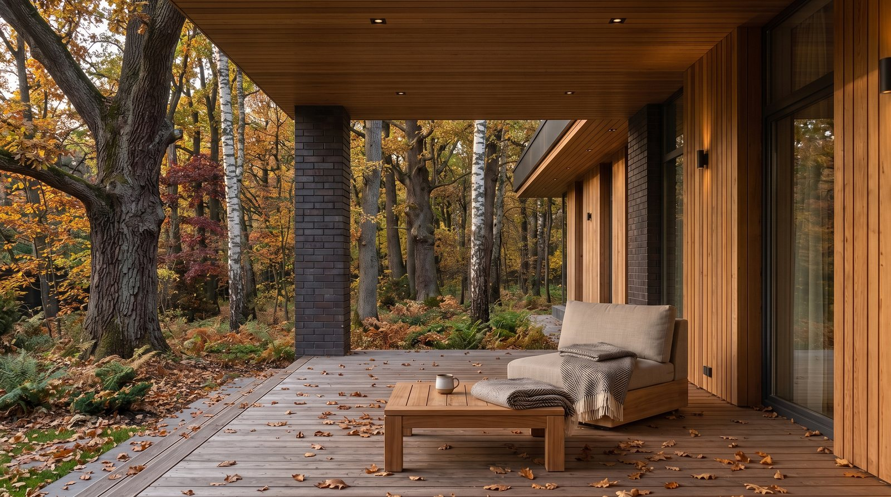
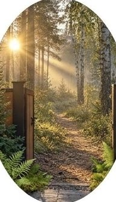
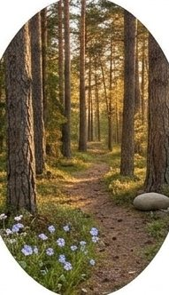
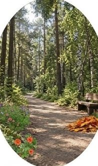
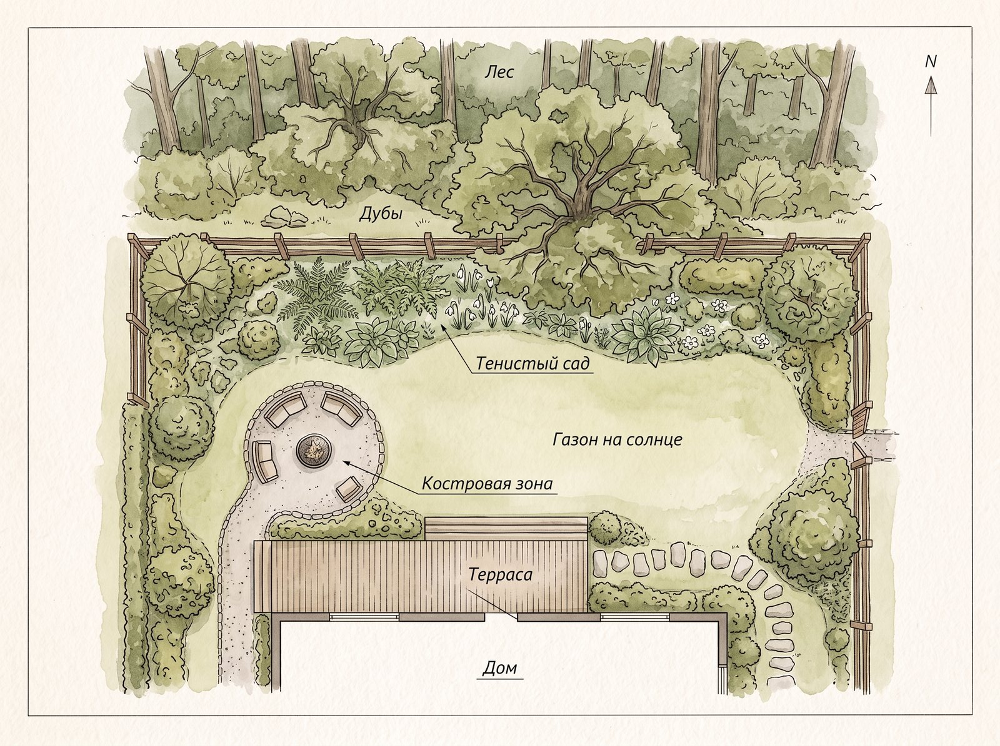

Вид из окна: дубрава в четыре сезона
Хованская дубрава — лесной массив в 69 га между деревней Николо-Хованское, ЖК «Прокшино» и Филатовским шоссе. Около 41 га из них — чистый дуб, это самая крупная чистая дубрава Новой Москвы. Дубам от 80 до 150 лет, деревья вековые.
У забора наших участков стоит лиственный лес: берёза и дуб, вековые дубы — прямо у границы. Такой лес за окном каждый сезон другой. Весной крона только зеленеет, летом закрывает небо, осенью даёт цвет, зимой открывает стволы и глубину. Один и тот же вид в январе и в июле — две разные картины.
Вид хорошо работает там, где вы проводите больше времени. Если день проходит на кухне и в гостиной, лес логично отдать им. Если дом нужен по выходным, важнее терраса, на которой завтракают и сидят вечером. Открывать к лесу весь фасад необязательно: иногда хватает одной большой группы окон. В доме 250 м² панорамные окна и терраса смотрят на деревья. В доме 200 м² к лесу развёрнут второй свет в кухне-гостиной.
Вид из дома
Год за окном
Одно окно — и четыре разных пейзажа за год. Лес у границы участка не бывает одинаковым дважды.

Свет: к солнцу или к лесу
Лес меняет свет и в доме, и в саду. Летом густая листва задерживает солнце, весной и осенью, пока ветви редкие, света на участке больше. Утром и вечером тень ложится по-разному.
Единого правильного расположения нет. Кому-то важен завтрак на солнце, кому-то нужна прохладная терраса к вечеру. Поэтому расположение дома на участке, разворот фасадов и окон мы определяем под вас. Хотите больше солнца в гостиной — разворачиваем её к солнцу. Важнее лес за стеклом — к лесу. Нужно и то и другое — решаем по комнатам: какая к свету, какая к деревьям.
Участок стоит увидеть в разное время суток. Утром, днём и ближе к вечеру он выглядит по-своему, и это помогает выбрать место для дома. Заранее прикиньте, когда вы чаще бываете дома: на завтраке, после работы или в выходной, и в какие часы вам нужно солнце.
Солнце и тень
Когда на участке солнце
Место для стола и кресел выбирают по ходу солнца

Уединение: сзади и сбоку только лес
Три участка стоят в ряд вдоль проезда, задом к дубраве. Участок 3 угловой: сзади и справа от него лес, соседей с этой стороны нет. Спереди, за проездом, — посёлок из двухэтажных домов. Проезд тупиковый и упирается в лес, сквозного движения на нём нет.
Для террасы и гостиной это значит простую вещь: из окна видны деревья, а не окно соседа. Сидеть вечером на террасе можно без оглядки на соседний забор, а гостиную не нужно закрывать шторами от улицы со стороны леса.
Тишина не отрезает от города. До метро Прокшино 8 минут на машине или 30 минут пешком. До МКАД 12 минут по Киевскому шоссе, до Москва-Сити 35 минут. Адрес: Москва, НАО, д. Николо-Хованское.


Посмотрите участок у дубравы
Покажем угловой участок 3 и расскажем, как развернуть дом под вас.
Прогулки: парк в двух минутах
До парка «Хованская дубрава» от участков 2 минуты. Это прогулочный парк в 21 га в восточной части массива: он открыт в 2020 году, по нему идёт ручей Бараньи Рога, а с 2021 года зимой работает лыжня.
Рядом набережная Прокшино — благоустроенные зоны для прогулок у воды. Получаются три разных маршрута: лесной парк, ручей и набережная. Утром можно сделать круг до завтрака, вечером выйти после ужина, зимой встать на лыжи, не садясь в машину.
Для семьи с детьми это место, где лес изучают вблизи: листья, жёлуди, следы на снегу. Для тех, кто работает из дома, это перерыв на свежем воздухе без дороги. Выход на прогулку определяет, как часто вы им пользуетесь: когда лес в двух минутах, он становится частью обычного дня, а не поводом для поездки.
Лес рядом с домом
На прогулку в любой момент
До парка «Хованская дубрава» 2 минуты пешком. Выйти можно между делами, не садясь в машину.

УтромКруг до завтрака
После ужинаВыйти, никуда не собираясь
В выходнойЧас на тропах паркаДвор у леса: костровая площадка, терраса, сад в тени
В доме 250 м² двор устроен под жизнь у леса. Костровый двор — открытая площадка, на которой вечером собирается вся семья. К лесу выходит терраса. Террасу в 30 м² из лиственницы можно сделать сразу.
Сад рядом с дубами живёт по своим правилам. Вот четыре, которые стоит учесть при планировании.
Тень. Под кроной солнца мало, и газон там нужен теневыносливый. Цветники тоже подбирают под тень.
Опад. Осенью дубы сбрасывают много листьев. Брусчатка убирается проще, чем гравий или грунтовая дорожка.
Вода и корни. У крупных деревьев сад не перекапывают и не поднимают уровень земли у стволов. Дренаж помогает воде уходить с участка и не стоять у корней.
Рубка. В Москве деревья рубят только по разрешению и с компенсационным озеленением. Поэтому сад проектируют вокруг деревьев, которые уже растут.
Благоустройство можно включить в стоимость дома: террасу, теневыносливый рулонный газон, брусчатку и дренаж.


Какой двор нужен вам?
Расскажите, как проводите вечера, — подскажем, где поставить террасу и костровую площадку.
Что посмотреть на просмотре
Участок у леса лучше оценивать ногами. Пройдите путь от проезда до границы и дальше в лес, потом вернитесь и посмотрите на дом глазами хозяина. Вот что проверить:
- Вид из будущих комнат. Встаньте там, где будет гостиная, и посмотрите, что открывается в окне.
- Вековые дубы у границы. Оцените, как близко они стоят, как далеко уходит их тень и какие окна дома смотрят на них.
- Свет. Если можете, приезжайте дважды: утром и вечером.
- Тишина. Остановитесь на тупиковом проезде и послушайте, что слышно. Сравните с местом, где вы живёте сейчас.
- Парк. Дойдите до входа в парк «Хованская дубрава», он в 2 минутах.
- Дорога. Прогоните путь до метро Прокшино: 8 минут на машине, 30 пешком.
- Разворот дома. Спросите, как расположить дом и окна под вашу семью. Это решается индивидуально.
На просмотре мы покажем участок, дубраву и готовые дома City House. Всё это в 20 минутах друг от друга.
Наши дома у дубравы
У Хованской дубравы мы строим дома 200, 250 и 500 м². Цены — 39,9, 42,9 и 82,9 млн ₽. Участок 8 соток, а для дома 500 м² — 16 соток.
В цену входит подключение: магистральный газ, электричество 15 кВт, септик и скважина. Дом сдаётся в тёплом контуре, с фасадом и коммуникациями, и регистрируется в Росреестре. Строим 6 месяцев.
На сайте есть конфигуратор: выберите участок, поставьте на него дом и посмотрите, как он встаёт по отношению к лесу и проезду. А на экскурсии мы пройдём по участку вместе.


Приезжайте к дубраве
Покажем участок, дубраву и готовые дома City House — всё в 20 минутах друг от друга.
 Планировки
Планировки Мы построили
Мы построили